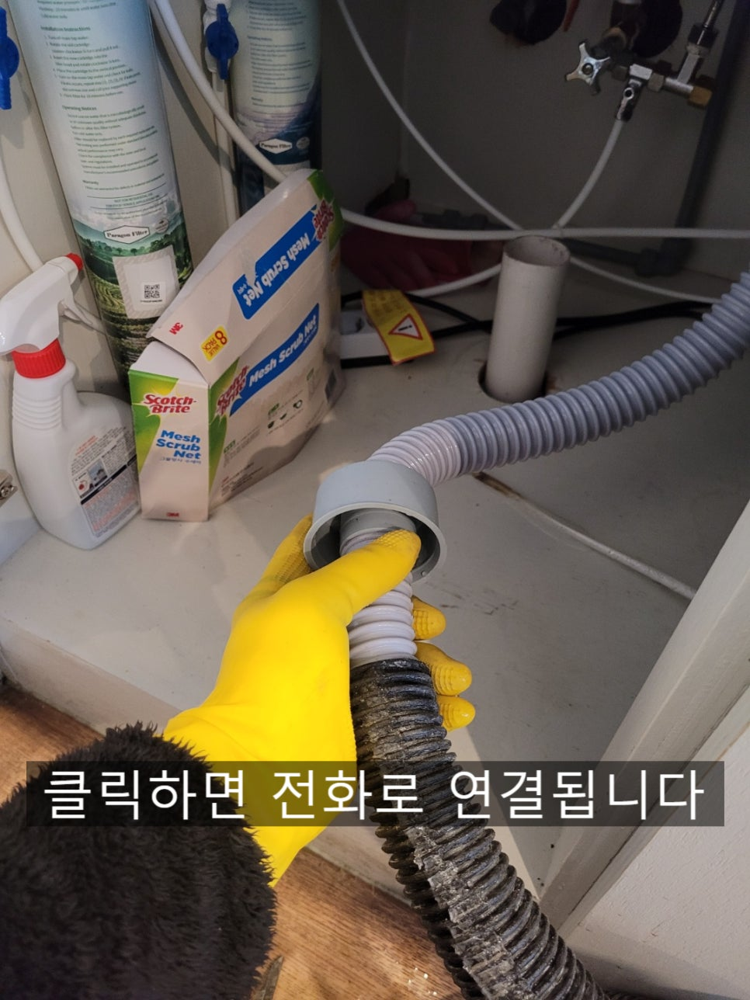
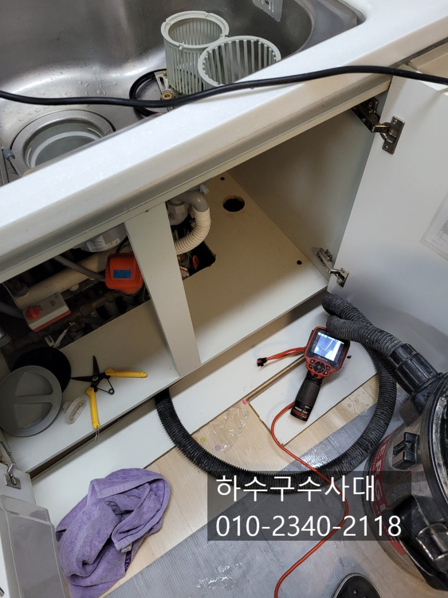
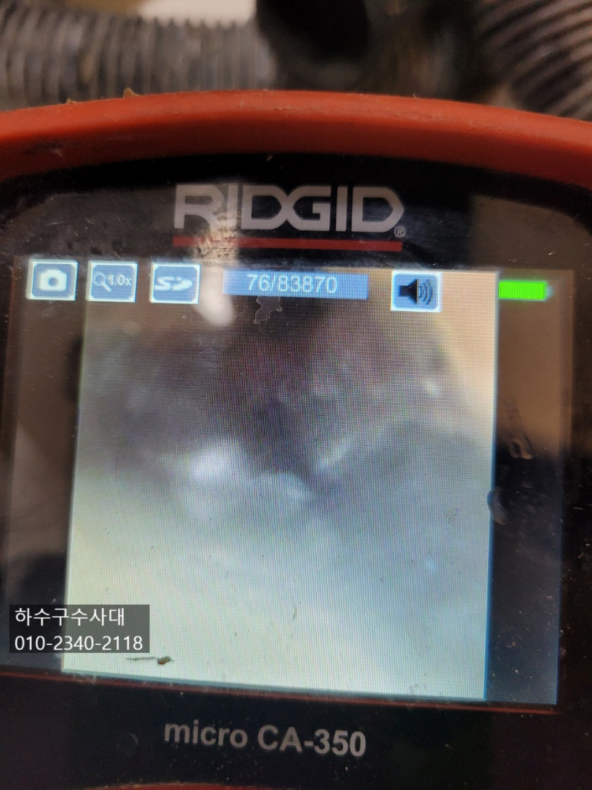
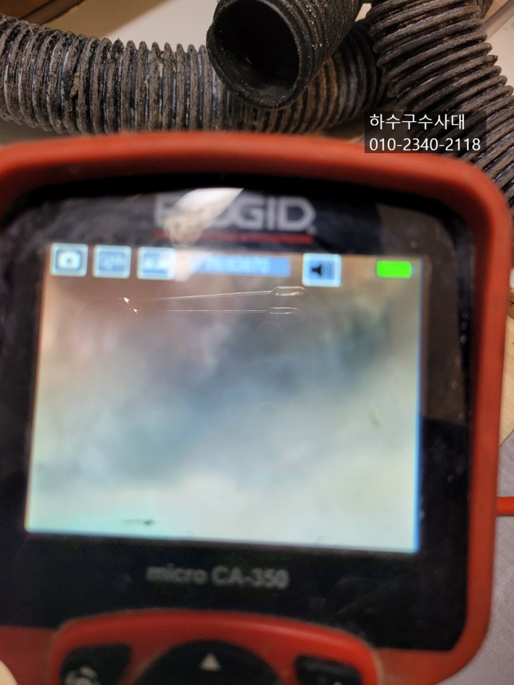
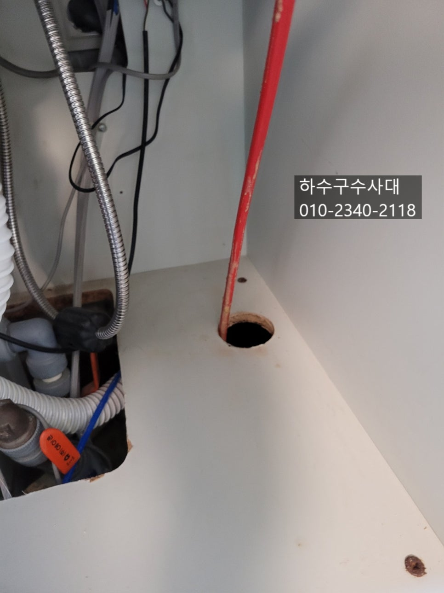
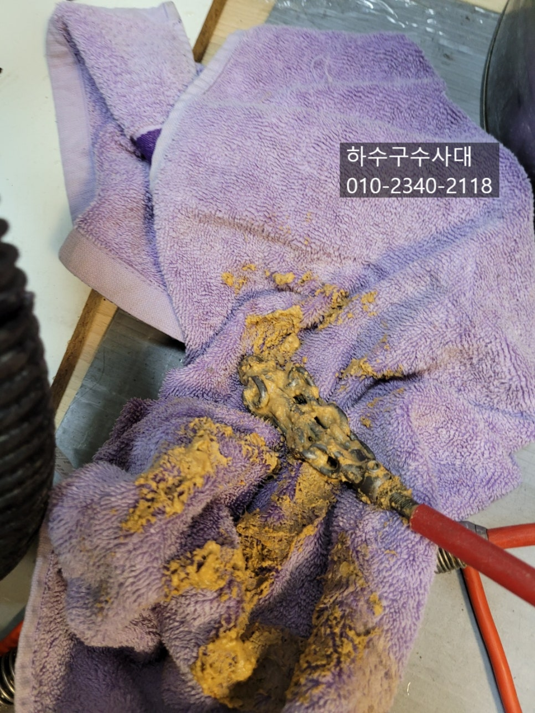
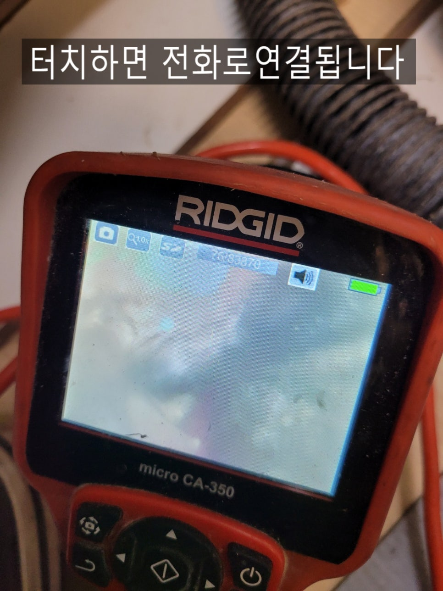

🏠 권선구하수구막힘 권선동 호매실동 고색동 권선구싱크대막힘
수원 고색동 싱크대막힘 전문 시공 후기

📋 작업 개요
- 위치: 수원 고색동, 고색동, 수원
- 서비스 유형: 싱크대막힘, 하수구막힘, 배관막힘, 뚫는업체, 배관청소, 설비공사
- 작업 일시: 2022. 2. 18. 23:56
- 업체명: 하수구수사대 (010-5615-2118)
🔍 문제 상황
권선구하수구막힘 권선동 호매실동 고색동 권선구싱크대막힘
안녕하세요!
"하수구수사대" 인사드립니다^^
살아가면서 #하수구막힘 을 겪는일이 흔치는 않았는데요
오래전에 지어진 아파트나 주택이 노후화 되고 우리들의
식습관도 바뀌면서 기름진 음식을 자주 섭취하면서
배관에 기름 또는 이물질로 막히는 일이 잦아 졌어요.
예전에는 단순하게 막히는 일이 많아 전문적인 장비라고는
스프링장비 뿐이라 고질적인 배관은 공사를 했지만
요즘엔 내시경카메라는 물론 공사를 하지 않고도
해결이 가능해 졌습니다.
오늘은 싱크대하수구막힘으로 연락을 받고 출동한 현장을
포스팅 하겠습니다.
제일 흔하게 막히는 증상은 싱크대호스 나 S트랩쪽에 음식물이

🔎 원인 분석
💡 전문가 진단: 하수구수사대010-2340-2118
걸려 막히는 경우가 있기때문에 자체적으로 확인해보시는것도
좋아요. 하지만 호스쪽을 모두 풀러서 확인을 해도 막힌구간이
보이지 않는다면 하수구에서 막혔다고 봐야하는데요
이럴때 많은분들이 펑크린이나 뚜러펑 또는 철물점에서 판매하는
뚫는 장비를 구입하여 시도를 해보는 경우도 많이 보았답니다.
이렇게 자체적으로 해결이 되어도 얼마가지않아 또 막힌다면
전문업체를 부르는것을 추천드립니다.
싱크대하수구는 아무래도 음식물이 배출되기 때문에
기름성분이 많이 흘러들어가는데요 오랜기간 기름이
배관에 머무르게 되면 딱딱하게 덩어리가 되기 때문에
일반적인 장비로는 제거하기가 쉽지 않답니다.
또한 펑크린같은 세정제를 넣어서 막힘증세가 악화되기도
한답니다.
내시경카메라로 하수구내부를 확인해 보니 기름덩어리가 배관주변에

🔧 작업 과정
덕지덕지 붙어있는것을 확인할수 있는데요 이러한 기름덩어리가
무너져 좁은 배관을 막게되면서 막힘증상이 나타난답니다.
싱크대하수구 배관의 경우 대부분 지름이 50MM로 되어있는데요
스프링장비로 뚫을수는 있지만 스프링은 16MM 로되어있어 기름을
모두 제거하기란 사실상 어렵답니다.
싱크대하수구를 배관청소를 할때는 플렉스샤프트 장비가 최적화 되어있는데요
앞쪽에 체인이 회전을 하면서 배관에 붙어있는 기름들을 모두
제거할수 있답니다. 물론 배관에 무리를 전혀 주지 않기 때문에
안심하셔도 됩니다.
하수구수사대
010-2340-2118
하수구업체를 선택하실때에는 항상 내시경카메라가 있는지
AS가 잘되는지 잘 알아보셔야하는데요 하수구설비하는 업체들이
많지만 실질적으로 내시경카메라가 없는 업체들도 많답니다.
특히 일반적인 설비를 모두하는 업체들은 전문적인 장비가
없기 때문에 물이 흘러나가는것만 보고 뚫렸다고 얘기를하지만
얼마가지않아 또 막히면 나몰라라 하는 경우가 많답니다.
하지만 뚫어놓고 내시경카메라로 확인을 해보면 배관에
이물질이 많은 경우도 많아 언제 막힐지 모르는 시한폭탄이 되는경우가
많아요.
"하수구수사대"는 1년as를 보장해드리고 있는데요 작업하는
저희 입장에서도 깨끗하고 깔끔하게 작업을하고 내시경카메라를


✅ 작업 완료
통해 확인을 하기때문에 그만큼 자신이 있다는 얘기입니다.
"하수구수사대"는 수원은 물론 서울,경기,인천 전지역 방문가능하며
주말,공휴일에도 항시대기하고 있으니
#하수구막힘 으로 고민중이시라면 언제든지
연락주시면 감사하겠습니다^^
경기도 수원시 권선구 곡반정로97번길 9 5층




⚠️ 주방 싱크대 배관 막힘 예방 수칙
- ✅ 기름기가 묻은 식기나 프라이팬은 설거지 전 키친타올로 반드시 기름때를 닦아내세요.
- ✅ 주기적으로 싱크대 개수대에 뜨거운 물을 가득 받아 한 번에 내려 배관 내부 기름을 씻어내세요.
- ✅ 배수구 거름망을 미세한 필터로 사용하시고 음식물 찌꺼기가 틈으로 새어 들지 않게 관리하세요.
- ✅ 베이킹소다와 식초를 뜨거운 물과 함께 일주일에 한 번씩 부어주면 배관 살균과 막힘 예방에 좋습니다.
💡 핵심 정리
- 확실한 장비 작업(내시경 점검 및 샤프트 스케일링)으로 원인을 뿌리 뽑습니다.
- 작업 후 1년 이내에 동일한 부위 재발 시 100% 무상 A/S 서비스를 보장합니다.
- 서울 · 경기 · 인천 전 지역에 24시간 언제든 긴급 출동할 수 있도록 항시 대기 중입니다.
❓ 자주 묻는 질문 (FAQ)
🚨 수원 고색동 싱크대막힘 문제로 고민이신가요?
정확한 원인 진단과 확실한 시공으로 재발 없는 해결을 약속드립니다.
24시간 긴급 출동 | 서울 · 경기 · 인천 전지역 | 1년 내 재발 시 무상 A/S